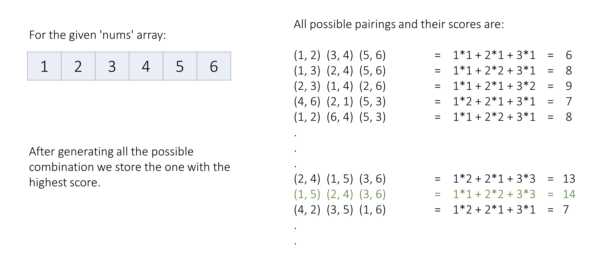
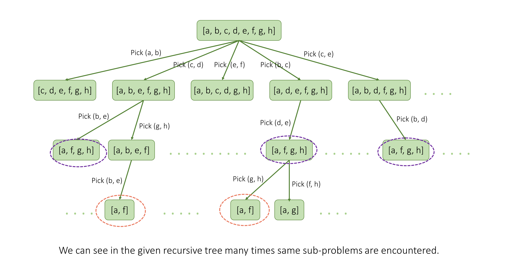

In this problem, we have an array of size 2 * n\text{2 * n}, and we perform n\text{n} operations, in each operation, we choose two numbers x\text{x} and y\text{y} and then we receive a score of i * gcd(x, y)\text{i * gcd(x, y)}, where i\text{i} is the current operation number, and remove these two numbers from our array. We need to maximize the sum of scores at the end.
The problem can be solved by using a backtracking approach, we can try forming all cases of all possible pairs of elements, generating the total score in each case, and selecting the one with the maximum score.

We can write a recursive function backtrack() which generates all possibilities by picking two elements
and recursively finding the answer for the remaining array after discarding the two chosen elements. We break the
current bigger problem into smaller similar sub-problems.
def backtrack(array) -> int:
for element1 in array:
for element2 in array:
# get the current score for pair (element1, element2)
# remove both elements from the array and get the remaining array score
# put the elements back in the array and try other elements, i.e. BACKTRACKThis is a brute-force approach. We can implement some optimizations.
Now, say we have an array of eight elements [a, b, c, d, e, f, g, h]\text{[a, b, c, d, e, f, g, h]}. Consider two cases.
In both cases, we can see that the sub-problem [a, f, g, h]\text{[a, f, g, h]} needs to be calculated, thus we can memoize the results to save computation time whenever a sub-problem is repeated.

Now, we know that the state of the current sub-problem depends on the remaining elements of the array. So we need to memoize the result based on this state. An easy way to implement this is using bitmasking.
We can keep a boolean array, and we mark picked numbers in this array. But instead of using an array, we can achieve the same functionality using an integer.
As integers have 3232 bits, each bit can be 00 or 11. We can use these bits to represent if an element of our array
is picked or not.
In an integer number (say mask\text{mask}) if the bit at position
i\text{i} is 00,
it means the array element at the ith\text{i}^{th}
index is not picked otherwise if it's 11 it means the element was picked earlier.
Note: If number of elements in the nums array will exceed 3232 then we will not be able to use this method with a 32 bit
integer.
So we can map the mask (current state) with the result, using a hashmap or an array,
memo.
Here, the mask's value will vary from 00 (no
element is picked) to 2nums array size−12^{\text{nums array size}} - 1
(i.e. 111111...11111111...11 in binary, all elements are picked).
Thus, the memo array's size will be 2nums array size=22n2^{\text{nums array size}} = 2^{2n}.
backtrack which takes the nums array, mask and pairsPicked
integers, and memo array as arguments:
nums array, then we return 00 from here as no score can be received now.
memo[mask] != -1, then we
return the stored result from the memo array.
maxScore as 0.firstIndex and
secondIndex in the nums array. We check if the bit of mask at
these indices is 0 to make sure those numbers were not picked earlier.
newMask, calculate the current score
currScore, and find the score of the remaining numbers remainingScore
recursively passing newMask in its parameter.
maxScore is smaller than currScore + remainingScore, we update
maxScore with it.
mask to its
previous value (i.e. we are backtracking).
memo array and return the
result maxScore.
memo array of size 22n2^{2 n}
and initialize with -1.
backtrack function with mask = 0 and pairsPicked = 0 to denote
no element is initially picked and return the result.
Java
class Solution {
public int backtrack(int[] nums, int mask, int pairsPicked, int[] memo) {
// If we have picked all the numbers from 'nums' array, we can't get more score.
if (2 * pairsPicked == nums.length) {
return 0;
}
// If we already solved this sub-problem then return the stored result.
if (memo[mask] != -1) {
return memo[mask];
}
int maxScore = 0;
// Iterate on 'nums' array to pick the first and second number of the pair.
for (int firstIndex = 0; firstIndex < nums.length; ++firstIndex) {
for (int secondIndex = firstIndex + 1; secondIndex < nums.length; ++secondIndex) {
// If the numbers are same, or already picked, then we move to next number.
if (((mask >> firstIndex) & 1) == 1 || ((mask >> secondIndex) & 1) == 1) {
continue;
}
// Both numbers are marked as picked in this new mask.
int newMask = mask | (1 << firstIndex) | (1 << secondIndex);
// Calculate score of current pair of numbers, and the remaining array.
int currScore = (pairsPicked + 1) * gcd(nums[firstIndex], nums[secondIndex]);
int remainingScore = backtrack(nums, newMask, pairsPicked + 1, memo);
// Store the maximum score.
maxScore = Math.max(maxScore, currScore + remainingScore);
// We will use old mask in loop's next interation,
// means we discarded the picked number and backtracked.
}
}
// Store the result of the current sub-problem.
memo[mask] = maxScore;
return maxScore;
}
public int maxScore(int[] nums) {
int memoSize = 1 << nums.length; // 2^(nums array size)
int[] memo = new int[memoSize];
Arrays.fill(memo, -1);
return backtrack(nums, 0, 0, memo);
}
// Utility function to calculate the gcd of two numbers.
public int gcd(int a, int b) {
if (b == 0) {
return a;
}
return gcd(b, a % b);
}
}
C++
class Solution {
public:
int backtrack(vector& nums, int mask, int pairsPicked, vector& memo) {
// If we have picked all the numbers from 'nums' array, we can't get more score.
if (2 * pairsPicked == nums.size()) {
return 0;
}
// If we already solved this sub-problem then return the stored result.
if (memo[mask] != -1) {
return memo[mask];
}
int maxScore = 0;
// Iterate on 'nums' array to pick the first and second number of the pair.
for (int firstIndex = 0; firstIndex < nums.size(); ++firstIndex) {
for (int secondIndex = firstIndex + 1; secondIndex < nums.size(); ++secondIndex) {
// If the numbers are same, or already picked, then we move to next number.
if (((mask >> firstIndex) & 1) == 1 or ((mask >> secondIndex) & 1) == 1) {
continue;
}
// Both numbers are marked as picked in this new mask.
int newMask = mask | (1 << firstIndex) | ((1 << secondIndex));
// Calculate score of current pair of numbers, and the remaining array.
int currScore = (pairsPicked + 1) * __gcd(nums[firstIndex], nums[secondIndex]);
int remainingScore = backtrack(nums, newMask, pairsPicked + 1, memo);
// Store the maximum score.
maxScore = max(maxScore, currScore + remainingScore);
// We will use old mask in loop's next interation,
// means we discarded the picked number and backtracked.
}
}
// Store the result of the current sub-problem.
memo[mask] = maxScore;
return maxScore;
}
int maxScore(vector& nums) {
int memoSize = 1 << nums.size(); // 2^(nums array size)
vector memo(memoSize, -1);
return backtrack(nums, 0, 0, memo);
}
};
JavaScript
let backtrack = (nums, mask, pairsPicked, memo) => {
// If we have picked all the numbers from 'nums' array, we can't get more score.
if (2 * pairsPicked == nums.length) {
return 0;
}
// If we already solved this sub-problem then return the stored result.
if (memo[mask] != -1) {
return memo[mask];
}
let maxScore = 0;
// Iterate on 'nums' array to pick the first and second number of the pair.
for (let firstIndex = 0; firstIndex < nums.length; ++firstIndex) {
for (let secondIndex = firstIndex + 1; secondIndex < nums.length; ++secondIndex) {
// If the numbers are same, or already picked, then we move to next number.
if (((mask >> firstIndex) & 1) === 1 || ((mask >> secondIndex) & 1) === 1) {
continue;
}
// Both numbers are marked as picked in this new mask.
const newMask = mask | (1 << firstIndex) | (1 << secondIndex);
// Calculate score of current pair of numbers, and the remaining array.
const currScore = (pairsPicked + 1) * gcd(nums[firstIndex], nums[secondIndex]);
const remainingScore = backtrack(nums, newMask, pairsPicked + 1, memo);
// Store the maximum score.
maxScore = Math.max(maxScore, currScore + remainingScore);
// We will use old mask in loop's next interation,
// means we discarded the picked number and backtracked.
}
}
// Store the result of the current sub-problem.
memo[mask] = maxScore;
return maxScore;
}
let maxScore = function(nums) {
const memoSize = 1 << nums.length; // 2^(nums array size)
const memo = new Array(memoSize).fill(-1);
return backtrack(nums, 0, 0, memo);
};
// Utility function to calculate the gcd of two numbers.
let gcd = (a, b) => {
return b === 0 ? a : gcd(b, a % b);
}
Swift
class Solution {
func backtrack(_ nums: [Int], _ mask: Int, _ pairsPicked: Int, _ memo: inout [Int]) -> Int {
// If we have picked all the numbers from 'nums' array, we can't get more score.
if 2 * pairsPicked == nums.count {
return 0
}
// If we already solved this sub-problem then return the stored result.
if memo[mask] != -1 {
return memo[mask]
}
var maxScore = 0
// Iterate on 'nums' array to pick the first and second number of the pair.
for firstIndex in 0..> firstIndex) & 1 == 0), ((mask >> secondIndex) & 1 == 0) else {
continue
}
// Both numbers are marked as picked in this new mask.
let newMask = mask | (1 << firstIndex) | (1 << secondIndex)
// Calculate score of current pair of numbers, and the remaining array.
let currScore = (pairsPicked + 1) * gcd(nums[firstIndex], nums[secondIndex])
let remainingScore = backtrack(nums, newMask, pairsPicked + 1, &memo)
// Store the maximum score.
maxScore = max(maxScore, currScore + remainingScore)
// We will use old mask in loop's next interation,
// means we discarded the picked number and backtracked.
}
}
// Store the result of the current sub-problem.
memo[mask] = maxScore
return maxScore
}
func maxScore(_ nums: [Int]) -> Int {
let memoSize = 1 << nums.count // 2^(nums array size)
var memo = Array(repeating: -1, count: memoSize)
return backtrack(nums, 0, 0, &memo)
}
// Utility function to calculate the gcd of two numbers.
func gcd(_ a: Int, _ b: Int) -> Int {
return b == 0 ? a: gcd(b, a % b)
}
}
Python3
class Solution:
def backtrack(self, nums: List[int], mask: int, pairsPicked: int, memo: List[int]) -> int:
# If we have picked all the numbers from 'nums' array, we can't get more score.
if 2 * pairsPicked == len(nums):
return 0
# If we already solved this sub-problem then return the stored result.
if memo[mask] != -1:
return memo[mask]
maxScore = 0
# Iterate on 'nums' array to pick the first and second number of the pair.
for firstIndex in range(len(nums)):
for secondIndex in range(firstIndex + 1, len(nums)):
# If the numbers are same, or already picked, then we move to next number.
if (mask >> firstIndex) & 1 == 1 or (mask >> secondIndex) & 1 == 1:
continue
# Both numbers are marked as picked in this new mask.
newMask = mask | (1 << firstIndex) | (1 << secondIndex)
# Calculate score of current pair of numbers, and the remaining array.
currScore = (pairsPicked + 1) * math.gcd(nums[firstIndex], nums[secondIndex])
remainingScore = self.backtrack(nums, newMask, pairsPicked + 1, memo)
# Store the maximum score.
maxScore = max(maxScore, currScore + remainingScore)
# We will use old mask in loop's next interation,
# means we discarded the picked number and backtracked.
# Store the result of the current sub-problem.
memo[mask] = maxScore
return maxScore
def maxScore(self, nums: List[int]) -> int:
memoSize = 1 << len(nums) # 2^(nums array size)
memo = [-1] * memoSize
return self.backtrack(nums, 0, 0, memo)
Here, m=2∗nm = 2 * n is the number of elements, and AA
is the maximum value in the nums array.
The maximum value of AA can be 10610^6.
backtrack function, but as only 2m2^{m}
unique states of mask are possible, due to memoization, we will only evaluate 2m2^{m}
calls of the function (in other calls we directly return stored result).
backtrack function call we iterate on all pairs using a nested for loop which will
take O(m2)O(m^2) time, and for each pair, we perform a gcd
operation which will take at most O(logA)O(\log A) time.
So, we take O(m2⋅logA)O(m^2 \cdot \log A) time
in each function call.
Note: A better upper bound for the time complexity might exist for this approach, but this analysis is sufficient during the limited time of an interview setting.
memo array, and a total of 2m=22n2^{m} = 2^{2n}
states are possible.
The previous approach can also be implemented iteratively.
We keep one integer variable state which will represent all the states of all possible sub-problems.
Also, let's keep a dp array, where dp[i] will store the maximum score we can get after we
have picked elements represented by i (in binary).
As we can't get more score after picking all the numbers.
Thus, our base case will be: dp[finalMask] = 0\text{dp[finalMask] = 0},
where finalMask = 1111...111\text{finalMask = 1111...111} (in binary).
When we are at a sub-problem state = X\text{state = X} and we choose
a pair at indices (i, j)\text{(i, j)}.
Then the current state's score will be, the maximum score we can get with the remaining numbers and the current
score, i.e.
dp[state] = dp[stateAfterPickingCurrPair] + operationNumber * gcd(nums[i], nums[j])\text{dp[state] = dp[stateAfterPickingCurrPair] + operationNumber * gcd(nums[i], nums[j])},
where, stateAfterPickingCurrPair = X | (1 << i) | (1 << j)\text{stateAfterPickingCurrPair = X | (1 << i) | (1 << j)}
(the new mask will always be greater than the current mask, this hints we need to find the result for the bigger
mask first).
and, operationNumber\text{operationNumber} will be one
more than the number of pairs we already picked, (number of ones in mask / 2) + 1\text{(number of ones in mask / 2) + 1}.
To sum up, in this approach, we will iterate on all possible states in decreasing order. The maximum
score for the base state when all elements are picked is zero, otherwise, we iterate on all possible pairs of
numbers we can choose, and using the chosen numbers and the score of the state after picking the current pair (as
discussed above) we calculate the current state's maximum score.
Note: If any state represents we picked odd number of elements then we skip that state, it will not be a valid state for us as we always pick numbers in pairs.
maxStates as 22n2^{2n},
finalMask as maxStates - 1.
dp of size maxStates to store the maximum score we can get after
picking the remaining numbers represented by each possible state.
state from finalMask to 0 in decreasing
order:
dp[state] to 0 and continue to the next iteration. Otherwise, we count the
number of numbers already picked numbersTaken using built-in STL methods and calculate the
number of pairs formed pairsFormed by dividing numbersTaken by 2.
numbersTaken is odd, it means we have picked an odd number of numbers, and this state is
not possible in our problem. Therefore, we continue to the next state.
firstIndex and secondIndex in the nums array.
0 to make sure those numbers were
not picked earlier.
stateAfterPickingCurrPair, calculate the current score
currentScore by multiplying the number of pairs formed after picking current pair,
pairsFormed + 1 by the gcd of these two picked numbers, and find the score of the
remaining numbers remainingScore by looking up
dp[stateAfterPickingCurrPair].
dp[state] is smaller than currentScore + remainingScore, we
update dp[state] with it.
dp[0].
Java
class Solution {
public int maxScore(int[] nums) {
int maxStates = 1 << nums.length; // 2^(nums array size)
int finalMask = maxStates - 1;
// 'dp[i]' stores max score we can get after picking remaining numbers represented by 'i'.
int[] dp = new int[maxStates];
// Iterate on all possible states one-by-one.
for (int state = finalMask; state >= 0; state--) {
// If we have picked all numbers, we know we can't get more score as no number is remaining.
if (state == finalMask) {
dp[state] = 0;
continue;
}
int numbersTaken = Integer.bitCount(state);
int pairsFormed = numbersTaken / 2;
// States representing even numbers are taken are only valid.
if (numbersTaken % 2 != 0) {
continue;
}
// We have picked 'pairsFormed' pairs, we try all combinations of one more pair now.
// We iterate on two numbers using two nested for loops.
for (int firstIndex = 0; firstIndex < nums.length; firstIndex++) {
for (int secondIndex = firstIndex + 1; secondIndex < nums.length; secondIndex++) {
// We only choose those numbers which were not already picked.
if (((state >> firstIndex) & 1) == 1 || ((state >> secondIndex) & 1) == 1) {
continue;
}
int currentScore = (pairsFormed + 1) * gcd(nums[firstIndex], nums[secondIndex]);
int stateAfterPickingCurrPair = state | (1 << firstIndex) | (1 << secondIndex);
int remainingScore = dp[stateAfterPickingCurrPair];
dp[state] = Math.max(dp[state], currentScore + remainingScore);
}
}
}
// Returning score we get from 'n' remaining numbers of array.
return dp[0];
}
// Helper method to calculate GCD using Euclidean algorithm.
private int gcd(int a, int b) {
if (b == 0) {
return a;
}
return gcd(b, a % b);
}
}
C++
class Solution {
public:
int maxScore(vector& nums) {
int maxStates = 1 << nums.size(); // 2^(nums array size)
int finalMask = maxStates - 1;
// 'dp[i]' stores max score we can get after picking remaining numbers represented by 'i'.
vector dp(maxStates);
// Iterate on all possible states one-by-one.
for (int state = finalMask; state >= 0; state -= 1) {
// If we have picked all numbers, we know we can't get more score as no number is remaining.
if (state == finalMask) {
dp[state] = 0;
continue;
}
int numbersTaken = __builtin_popcount(state);
int pairsFormed = numbersTaken / 2;
// States representing even numbers are taken are only valid.
if (numbersTaken % 2) {
continue;
}
// We have picked 'pairsFormed' pairs, we try all combinations of one more pair now.
// We itearte on two numbers using two nested for loops.
for (int firstIndex = 0; firstIndex < nums.size(); firstIndex += 1) {
for (int secondIndex = firstIndex + 1; secondIndex < nums.size(); secondIndex += 1) {
// We only choose those numbers which were not already picked.
if (((state >> firstIndex) & 1) == 1 || ((state >> secondIndex) & 1) == 1) {
continue;
}
int currentScore = (pairsFormed + 1) * __gcd(nums[firstIndex], nums[secondIndex]);
int stateAfterPickingCurrPair = state | (1 << firstIndex) | (1 << secondIndex);
int remainingScore = dp[stateAfterPickingCurrPair];
dp[state] = max(dp[state], currentScore + remainingScore);
}
}
}
// Returning score we get from 'n' remaining numbers of array.
return dp[0];
}
};
JavaScript
var maxScore = function(nums) {
const maxStates = 1 << nums.length; // 2^(nums array size)
const finalMask = maxStates - 1;
// 'dp[i]' stores max score we can get after picking remaining numbers represented by 'i'.
const dp = new Array(maxStates).fill(0);
// Iterate on all possible states one-by-one.
for (let state = finalMask; state >= 0; state -= 1) {
// If we have picked all numbers, we know we can't get more score as no number is remaining.
if (state == finalMask) {
dp[state] = 0;
continue;
}
const numbersTaken = state.toString(2).split('1').length - 1;
const pairsFormed = numbersTaken / 2;
// States representing even numbers are taken are only valid.
if (numbersTaken % 2) {
continue;
}
// We have picked 'pairsFormed' pairs, we try all combinations of one more pair now.
// We itearte on two numbers using two nested for loops.
for (let firstIndex = 0; firstIndex < nums.length; firstIndex += 1) {
for (let secondIndex = firstIndex + 1; secondIndex < nums.length; secondIndex += 1) {
// We only choose those numbers which were not already picked.
if (((state >> firstIndex) & 1) == 1 || ((state >> secondIndex) & 1) == 1) {
continue;
}
const currentScore = (pairsFormed + 1) * gcd(nums[firstIndex], nums[secondIndex]);
const stateAfterPickingCurrPair = state | (1 << firstIndex) | (1 << secondIndex);
const remainingScore = dp[stateAfterPickingCurrPair];
dp[state] = Math.max(dp[state], currentScore + remainingScore);
}
}
}
// Returning score we get from 'n' remaining numbers of array.
return dp[0];
}
// Helper function to find the gcd of two numbers.
function gcd(a, b) {
if (b == 0) {
return a;
}
return gcd(b, a % b);
}
Swift
class Solution {
func maxScore(_ nums: [Int]) -> Int {
let maxStates = 1 << nums.count // 2^(nums array size)
let finalMask = maxStates - 1
// 'dp[i]' stores max score we can get after picking remaining numbers represented by 'i'.
var dp = [Int](repeating: 0, count: maxStates)
// Iterate on all possible states one-by-one.
for state in (0...finalMask).reversed() {
// If we have picked all numbers, we know we can't get more score as no number is remaining.
guard state != finalMask else {
dp[state] = 0
continue
}
let numbersTaken = state.nonzeroBitCount
let pairsFormed = numbersTaken / 2
// States representing even numbers are taken are only valid.
guard numbersTaken % 2 == 0 else {
continue
}
// We have picked 'pairsFormed' pairs, we try all combinations of one more pair now.
// We itearte on two numbers using two nested for loops.
for firstIndex in 0..> firstIndex) & 1 == 0), ((state >> secondIndex) & 1 == 0) else {
continue
}
let currentScore = (pairsFormed + 1) * gcd(nums[firstIndex], nums[secondIndex])
let stateAfterPickingCurrPair = state | (1 << firstIndex) | (1 << secondIndex)
let remainingScore = dp[stateAfterPickingCurrPair]
dp[state] = max(dp[state], currentScore + remainingScore)
}
}
}
// Returning score we get from 'n' remaining numbers of array.
return dp[0]
}
// Helper function to calculate gcd of two numbers
func gcd(_ a: Int, _ b: Int) -> Int {
if b == 0 {
return a
}
return gcd(b, a % b)
}
}
Python3
class Solution:
def maxScore(self, nums: List[int]) -> int:
maxStates = 1 << len(nums) # 2^(nums array size)
finalMask = maxStates - 1
# 'dp[i]' stores max score we can get after picking remaining numbers represented by 'i'.
dp = [0] * maxStates
# Iterate on all possible states one-by-one.
for state in range(finalMask, -1, -1):
# If we have picked all numbers, we know we can't get more score as no number is remaining.
if state == finalMask:
dp[state] = 0
continue
numbersTaken = bin(state).count('1')
pairsFormed = numbersTaken // 2
# States representing even numbers are taken are only valid.
if numbersTaken % 2:
continue
# We have picked 'pairsFormed' pairs, we try all combinations of one more pair now.
# We iterate on two numbers using two nested for loops.
for firstIndex in range(len(nums)):
for secondIndex in range(firstIndex + 1, len(nums)):
# We only choose those numbers which were not already picked.
if (state >> firstIndex & 1) == 1 or (state >> secondIndex & 1) == 1:
continue
currentScore = (pairsFormed + 1) * math.gcd(nums[firstIndex], nums[secondIndex])
stateAfterPickingCurrPair = state | (1 << firstIndex) | (1 << secondIndex)
remainingScore = dp[stateAfterPickingCurrPair]
dp[state] = max(dp[state], currentScore + remainingScore)
# Returning score we get from 'n' remaining numbers of array.
return dp[0]
Here, m=2∗nm = 2 * n is the number of elements, and AA
is the maximum value in the nums array.
The maximum value of AA can be 10610^6.
Time complexity: O(22n⋅(2n)2⋅logA)=O(4n⋅n2⋅logA)O(2^{2n} \cdot (2n)^2 \cdot \log A) = O(4^n \cdot n^2 \cdot \log A)
state which in the worst
case will take O(log2(2m−1))=O(log22m)=O(m)O(\log_2 (2^m - 1)) = O(\log_2 2^m) = O(m)
time, then we iterate on all pairs using a nested for loop which will take O(m2)O(m^2) time, and for each pair, we perform a gcd
operation which will take at most O(logA)O(\log A) time.
So, we take O(m+m2⋅logA)=O(m2⋅logA)O(m + m^2 \cdot \log A) = O(m^2 \cdot \log A) time.
Space complexity: O(22n)=O(4n)O(2^{2n}) = O(4^n)
dp of size 2m=22n2^{m} = 2^{2n}
to store results for all possible states.